This vignette shows how a midi file can also be read in by the tuneR package and then written to disc. However, for other midi files the code might probably adapted a bit.
library(pyramidi) library(zeallot) library(dplyr) #> #> Attaching package: 'dplyr' #> The following objects are masked from 'package:stats': #> #> filter, lag #> The following objects are masked from 'package:base': #> #> intersect, setdiff, setequal, union library(tidyr) library(ggplot2) mt <- reticulate::import("miditapyr") mido <- reticulate::import("mido")
With pyramidi data can be loaded into a tidy dataframe like this:
mid_file_str <- system.file("extdata", "test_midi_file.mid", package = "pyramidi") mido_mid_file <- mido$MidiFile(mid_file_str) dfc <- mt$midi_to_df(mido_mid_file) ticks_per_beat = mido_mid_file$ticks_per_beat df <- dfc %>% mt$tidy_df() %>% as_tibble() df #> # A tibble: 268 x 13 #> i_track meta type name time note velocity channel tempo numerator #> <dbl> <lgl> <chr> <lis> <dbl> <dbl> <dbl> <dbl> <dbl> <dbl> #> 1 0 TRUE trac… <chr… 0 NaN NaN NaN NaN NaN #> 2 0 FALSE note… <dbl… 0 43 72 9 NaN NaN #> 3 0 FALSE note… <dbl… 0 39 64 9 NaN NaN #> 4 0 FALSE note… <dbl… 0 36 101 9 NaN NaN #> 5 0 TRUE set_… <dbl… 0 NaN NaN NaN 666666 NaN #> 6 0 TRUE time… <dbl… 0 NaN NaN NaN NaN 4 #> 7 0 FALSE note… <dbl… 240 43 72 9 NaN NaN #> 8 0 FALSE note… <dbl… 0 39 64 9 NaN NaN #> 9 0 FALSE note… <dbl… 0 36 101 9 NaN NaN #> 10 0 FALSE note… <dbl… 240 42 101 9 NaN NaN #> # … with 258 more rows, and 3 more variables: denominator <dbl>, #> # clocks_per_click <dbl>, notated_32nd_notes_per_beat <dbl>
With tuneR this could be done for this file in the following way (for other midi files the cleaning code would have to be adapted):
# tuneR: dft <- tuneR::readMidi(mid_file_str)
rename_type_vec <- c( "Set Tempo" = "set_tempo", "Time Signature" = "time_signature", "Note On" = "note_on", "Note Off" = "note_off", "Sequence/Track Name" = "track_name", "End of Track" = "end_of_track", "Key Signature" = "key", "Controller" = "control", "Program Change" = "program", "Pitch Bend" = "pitch" ) df2 <- dft %>% mutate(event = as.character(event)) %>% as_tibble() %>% mutate(meta = !is.na(type)) %>% select(-type) %>% rename(type = event, note = parameter1, velocity = parameter2, i_track = track) %>% mutate(type = recode(type, !!!rename_type_vec)) %>% mutate(tempo = ifelse(type == "set_tempo", as.integer(parameterMetaSystem), NA)) %>% mutate(name = ifelse(type == "track_name", parameterMetaSystem, NA)) %>% mutate(temp = ifelse(type == "time_signature", parameterMetaSystem, NA)) %>% separate(temp, c("numerator", "denominator", "clocks_per_click", "temp1", "temp2", "notated_32nd_notes_per_beat"), convert = TRUE) %>% select(-temp1, -temp2) %>% arrange(i_track, time) %>% group_by(i_track) %>% mutate(time = time - lag(time) %>% {.[1] = 0; .}) %>% ungroup() %>% mutate_if(is.numeric, ~ifelse(is.na(.), NaN, .)) %>% mutate(name = ifelse(is.na(name), list(NULL), name)) #> Warning: Problem with `mutate()` input `tempo`. #> ℹ NAs introduced by coercion #> ℹ Input `tempo` is `ifelse(...)`. #> Warning in ifelse(type == "set_tempo", as.integer(parameterMetaSystem), : NAs #> introduced by coercion #> Warning: Expected 6 pieces. Additional pieces discarded in 1 rows [6].
dfm2 <- tab_measures(df2, ticks_per_beat) %>% # create a variable `track` with the track name (in order to have it in the plot below) mutate(track = ifelse(purrr::map_chr(name, typeof) != "character", list(NA_character_), name)) %>% unnest(cols = track) %>% fill(track) dfm2 %>% mt$split_df() %->% c(df_meta, df_notes) # small correction of transforming "NA" strings into real NA values: df_meta <- df_meta %>% mutate(name = ifelse(name == "NA", NA, name))
Now we can do exactly the same as if this data was read in by pyramidi (cf. the README)
df_not_notes <- df_notes %>% dplyr::filter(!stringr::str_detect(.data$type, "^note_o[nf]f?$")) df_notes_wide <- df_notes %>% dplyr::filter(stringr::str_detect(.data$type, "^note_o[nf]f?$")) %>% # tab_measures(df_meta, df_notes, ticks_per_beat) %>% widen_events() %>% left_join(pyramidi::midi_defs) #> Joining, by = "note" df_notes_wide #> # A tibble: 130 x 20 #> channel note parameterMetaSy… i_track meta i_note track m_note_on #> <dbl> <dbl> <chr> <int> <lgl> <int> <chr> <dbl> #> 1 9 43 NA 1 FALSE 1 drum… 0 #> 2 9 39 NA 1 FALSE 1 drum… 0 #> 3 9 36 NA 1 FALSE 1 drum… 0 #> 4 9 42 NA 1 FALSE 1 drum… 0.5 #> 5 9 38 NA 1 FALSE 1 drum… 0.5 #> 6 9 43 NA 1 FALSE 2 drum… 0.75 #> 7 9 36 NA 1 FALSE 2 drum… 1 #> 8 9 43 NA 1 FALSE 3 drum… 1.5 #> 9 9 42 NA 1 FALSE 2 drum… 1.5 #> 10 9 43 NA 1 FALSE 4 drum… 2 #> # … with 120 more rows, and 12 more variables: m_note_off <dbl>, #> # b_note_on <dbl>, b_note_off <dbl>, t_note_on <dbl>, t_note_off <dbl>, #> # ticks_note_on <dbl>, ticks_note_off <dbl>, time_note_on <dbl>, #> # time_note_off <dbl>, velocity_note_on <dbl>, velocity_note_off <dbl>, #> # note_name <fct>
df_notes_wide %>% ggplot() + geom_segment( aes( x = m_note_on, y = note_name, xend = m_note_off, yend = note_name, color = velocity_note_on ) ) + # each midi track is printed into its own facet: facet_wrap( ~ track, ncol = 1, scales = "free_y") + guides(color=guide_colorbar(title="Note velocity")) + labs(title = "Piano roll of the note events in the midi file") + xlab("Measures") + scale_x_continuous(breaks = seq(0, 16, 4), minor_breaks = 0:16) + scale_colour_gradient() + theme_minimal()

df_notes_out <- df_notes_wide %>% select(c("i_track", "channel", "note", "i_note"), matches("_note_o[nf]f?$")) %>% pivot_longer(matches("_note_o[nf]f?$"), names_to = c(".value", "type"), names_pattern = "(.+?)_(.*)") %>% # note events are not meta events (cf. # https://mido.readthedocs.io/en/latest/midi_files.html?highlight=meta#meta-messages): mutate(meta = FALSE)
df_notes_out <- df_notes_out %>% full_join(df_meta) %>% full_join(df_not_notes) %>% # It is important to put the events in the right order: arrange(i_track, ticks) %>% group_by(i_track) %>% # Now we can calculate the time increments between events; # The first event of each track is set to 0: mutate(time = ticks - lag(ticks) %>% {.[1] = 0; .}) %>% ungroup() #> Joining, by = c("i_track", "i_note", "type", "m", "b", "t", "ticks", "time", "meta") #> Joining, by = c("i_track", "channel", "note", "i_note", "type", "m", "b", "t", "ticks", "time", "velocity", "meta", "parameterMetaSystem", "track") df_notes_out #> # A tibble: 268 x 20 #> i_track channel note i_note type m b t ticks time velocity #> <int> <dbl> <dbl> <int> <chr> <dbl> <dbl> <dbl> <dbl> <dbl> <dbl> #> 1 1 9 43 1 note… 0 0 0 0 0 72 #> 2 1 9 39 1 note… 0 0 0 0 0 64 #> 3 1 9 36 1 note… 0 0 0 0 0 101 #> 4 1 NA NA 0 trac… 0 0 0 0 0 NA #> 5 1 NA NA 0 set_… 0 0 0 0 0 NA #> 6 1 NA NA 0 time… 0 0 0 0 0 NA #> 7 1 9 43 1 note… 0.25 1 0.167 240 240 72 #> 8 1 9 39 1 note… 0.25 1 0.167 240 0 64 #> 9 1 9 36 1 note… 0.25 1 0.167 240 0 101 #> 10 1 9 42 1 note… 0.5 2 0.333 480 240 101 #> # … with 258 more rows, and 9 more variables: meta <lgl>, #> # parameterMetaSystem <chr>, tempo <dbl>, name <list>, numerator <dbl>, #> # denominator <dbl>, clocks_per_click <dbl>, #> # notated_32nd_notes_per_beat <dbl>, track <chr>
dfc2 <- df_notes_out %>% # For midi export the new columns are removed: select(names(df)) %>% # When reticulate converts R dataframes to pandas, there are complications # with character columns containing missing values. # repair_reticulate_conversion = TRUE, repairs that in the miditapyr python # code: mt$compact_df(repair_reticulate_conversion = TRUE) dfc2 %>% as_tibble() #> # A tibble: 268 x 3 #> i_track meta msg #> <int> <lgl> <list> #> 1 1 FALSE <named list [5]> #> 2 1 FALSE <named list [5]> #> 3 1 FALSE <named list [5]> #> 4 1 TRUE <named list [3]> #> 5 1 TRUE <named list [3]> #> 6 1 TRUE <named list [6]> #> 7 1 FALSE <named list [5]> #> 8 1 FALSE <named list [5]> #> 9 1 FALSE <named list [5]> #> 10 1 FALSE <named list [5]> #> # … with 258 more rows
dfc2 %>% mt$df_to_midi(ticks_per_beat, "test.mid")